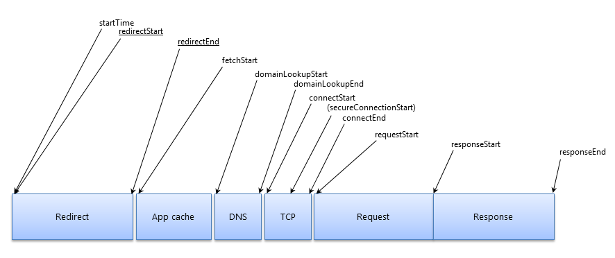

Tutorial:
How to build a handy performance bookmarklet
A bit 'bout me
Sr. Frontend Dev at Nurun (soon to be RazorFish)
Karlsruhe > Sydney > Galway > Seoul > Toronto
@MicMro
https://github.com/micmro
Bookmarklets
DOM Monster!

PerfMap

Waterfall

Performance-Bookmarklet

How to get started?
Bookmark boilerplate
javascript:(function(){
var el = document.createElement('script');
el.src = 'https://your-site.com/bookmarklet.js';
document.getElementsByTagName('body')[0].appendChild(el);
})();
Installing the bookmarklet
Via Bookmark Manager

Navigation, User and
Resource Timing API
Navigation Timing API

Examples
performance.timing
var totalRequest = performance.timing.domComplete - performance.timing.navigationStart;
var connectionTime = performance.timing.responseStart - performance.timing.navigationStart;
User Timing API
performance.mark("startTask");
setTimeout(function(){
performance.mark("endTask");
//measure elapsed time
performance.measure("TaskTotal", "startTask", "endTask");
//output duration
console.log(performance.getEntriesByName("TaskTotal").duration);
}, 500);
Resource Timing API

Examples
var resources = performance.getEntriesByType("resource");
console.table(resources.map(function(resource){
return {
"name" : resource.name,
"total" : Math.round(resource.duration) + "ms"
}
}));
Where to go from here?
Ideas
- SLA quick checks
- Performance Snooping